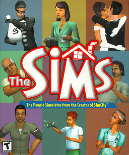

Simulation · 2000
The Sims
A dollhouse simulation that quietly became the best-selling PC game alive.

Cover: Wikipedia: The Sims (video game)
Facts
- Released
- 2000-02-04
- Genre
- Life Sim
- Category
- Simulation
- Platforms
- Nintendo, PC, PlayStation, Xbox
- Developers
- Maxis
- Publishers
- Aspyr, Electronic Arts, Findev